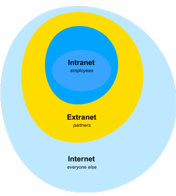

Introduction à la sécurité réseau (vulgarisation) :
Objectifs :
-
Différencier un réseau interne et externe
-
Présenter des outils de sécurité réseau
-
Décrire les failles des protocoles de la pile TCP/IP

Durant ce cours, je ferai souvent une analogie avec le domaine immobilier afin d'imager mes propos.
Un réseau informatique peut être comparé au domicile dans lequel on vit. En effet, certaines parties comme le jardin ou un emplacement de parking sont accessibles depuis l'extérieur. Tandis que d'autres, tel que votre salon ou cuisine ne le sont pas.
Ceci n'est pas un immeuble !
Qu'est-ce qu'un réseau ?
Définition :
Un réseau informatique est un ensemble de périphériques reliés entre eux pour échanger des données.
-
Données
-
Protocoles
-
Identifiants
-
Périphériques
-
Moyens de transmission
-
Modèle de référence
-
LAN/WAN/SOHO
Ressources sensibles :
Un réseau permet d'échanger des données entre un ou plusieurs périphériques. Cependant, dans un réseau, certaines données ne doivent être accédées que de certains utilisateurs. Prenons le diagramme ci-dessous, comment pouvons-nous autoriser l'accès uniquement aux personnes du secrétariat ?
Deux personnes dont la cohabitation n'est pas possible.
Solution : segmentation :
La segmentation réseau est une technique ayant pour objectif de diviser un réseau informatique en plusieurs sous-réseaux. La segmentation permet :
-
d'augmenter les performances du réseau
-
d'améliorer sa sécurité

Segmentation réseau : performance :
Les protocoles réseaux sont très verbeux dans leurs communications. Les périphériques réseaux utilisent beaucoup de leurs ressources à traiter des informations qui ne leur sont pas destinées.
-
DHCP
-
ARP
-
etc.

Segmentation réseau : sécurité :
Des ressources ayant une exigence de sécurité ou un niveau d'accessibilité différent ne doivent pas se trouver dans un même réseau.

Comment pourrions-nous segmenter ce réseau ?
Segmentation réseau : stratégies :
La segmentation réseau se fait en fonction des besoins de l'entreprise. Ci-dessous, des exemple de besoins de segmentation :
-
par département : RH, Comptabilité, etc.
-
par périmètre applicatif : DEV, QUA, PRD
-
par type de ressources : public ou privé
Un utilisateur se verra refuser l'accès s'il souhaite s'introduire dans un réseau non autorisé. C'est une façon simple de prévenir, sinon de contenir les attaques et incidents.
Comment segmente-t-on un réseau ?
Valeurs de référence : 128, 64, 32, 16, 8, 4, 2, 1
Divisez le "range" 10.10.10.0/24 afin d'obtenir un sous-réseau contenant 25, 36 et 100 utilisateurs.
Comment procéder ?
-
Triez les sous-réseaux de manière décroissante en fonction de leur taille.
-
Identifiez le nombre de bits nécessaires afin de répondre au besoin.
-
Calculez l'identifiant réseau et l'adresse de broadcast du sous-réseau le plus grand (non calculé).
-
Calculez le réseau suivant à partir du nouveau "range" obtenu.
Exemple : un sous-réseau contenant 100 utilisateurs. Le 8ème bit nous permet d'obtenir au moins le nombre d'hôtes souhaités. Le réseau obtenu est maintenant 10.10.10.0/25 avec l'adresse de broadcast 10.10.10.127. Quels sont les réseaux suivants ?
Exercice segmentation :
-
10.10.0.2/24 et 10.10.10.1/24 sont-ils dans le même réseau ?
Non, car leurs adresses réseau sont 10.10.0.0 et 10.10.10.0, donc réseaux différents.
-
Combien d'adresses assignables possède le réseau 10.10.10.0/25 ?
/25 = 128 adresses totales → 126 assignables (on retire réseau + broadcast).
-
Quel masque de sous-réseau permet de contenir 32 utilisateurs ?
Il faut au moins 34 adresses (32 + réseau + broadcast) → /27 (255.255.255.224).
-
Quelle est l'adresse de diffusion ainsi que l'identifiant du réseau 10.10.0.0/23 ?
Plage = 10.10.0.0 → 10.10.1.255. Réseau : 10.10.0.0. Broadcast : 10.10.1.255
Se protéger des menaces externes :
Il est nécessaire d'identifier le type de réseau que l'on souhaite sécurisé. En effet, sécuriser un appartement privé et un magasin ne se fait pas de la même manière.
-
Intranet : ressources internes non accessibles depuis Internet. Correspond à un appartement privé.
-
Extranet : ressources internes que l'on met à disposition sur Internet. Correspond à une partie publique de notre appartement. Exemple : le jardin.
-
Internet : ressources externes publiques. Exemple : une rue.
De quelle manière protégeons-nous l'accès à un lieu ?
Firewall : porte d'entrée :
Le but du firewall est de fournir une connectivité contrôlée et maîtrisée à notre réseau (basée sur le principe du moindre privilège). Le filtrage se fait selon divers critères. Les plus courants sont :
-
l'origine ou la destination des paquets (adresse IP, ports TCP ou UDP, interface réseau, etc.);
-
les options contenues dans les données (fragmentation, validité, etc.);
-
les données elles-mêmes (taille, correspondance à un motif, etc.);
-
le nom de domaine (couche ?).
Il se concentre sur la couche 3 et 4 du modèle OSI.
Les types de firewall :
-
machine (host) : surveille en permanence toutes les transmissions vers et depuis un ordinateur.
-
réseau : porte entre le réseau interne qui doit être sécurisé et le système externe comme Internet.
Exemple de configuration firewall :

Web Application Firewall (couche 7) :
Le Web Application Firewall (WAF) protège vos applications Web en filtrant, surveillant et bloquant tout trafic HTTP(S) malveillant se dirigeant vers votre application Web.
Il s'agit d'un reverse proxy chargé de protéger vos applications des attaques les plus courantes :
-
SQL injection
-
Cross-site scripting (XSS)
-
Session hijacking
-
Distributed denial of service (DDoS) attacks
-
Cookie poisoning
-
Parameter tampering
Comment segmenter ce réseau (intranet) ?
Comment expose-t-on nos ressources publiques ?
DMZ : jardin :
Certaines parties de notre domicile sont accessibles sans avoir à passer par notre porte d'entrée (firewall). Exemple, lorsque nous décorons un jardin, une façade avec des décorations de Noël, celles-ci sont accessibles à tout le monde sans pour autant donner accès à notre domicile.
À l'image de notre jardin, l'architecture DMZ rend accessible certaines ressources sans pour autant exposer notre réseau local.
DMZ : extranet :
La DMZ (DeMilitarized Zone) est un sous-réseau isolé de notre réseau local contenant des ressources que l'on souhaite rendre accessibles depuis l'extérieur (ex: extranet). Le nom provient de la zone coréenne démilitarisée.

Quelle serait une analogie au firewall devant notre intranet ?
Comment accéder à notre réseau privé ?
Exercice : architecture :
-
Dessinez deux réseaux (private LAN + DMZ)
-
Ajoutez un firewall + WAF
Comment accède-t-on aux ressources de notre réseau privé ?
VPN : passage secret vers l'intranet :
Un Virtual private Network (VPN) crée un tunnel sécurisé entre votre système et le système distant.

Un VPN crée un réseau privé virtuel qui camoufle/chiffre les données transmises.
Les données chiffrées interceptées lors de la transmission ne pourront pas être déchiffrées.
-
privé : les données ne sont accessibles qu'après avoir établi une connexion.
-
virtuel : il s'agit de deux réseaux privés traversant l'Internet.
Le VPN offre une réduction du coût de communication car il ne nécessite pas une liaison privée physique (ligne louée dédiée). Le chiffrage des données offre : confidentialité, intégrité des données et l'authentification.
Site à site :
Un VPN site à site sert à relier des réseaux distants. Exemple : maison mère et succursale.

Accès à distance :
Ce type de VPN connecte des utilisateurs finaux au réseau local privé.
Quel outil protège les clients lorsqu'ils communiquent sur Internet ?
Proxy : le protecteur (man in the middle) :
Lorsqu'un enfant souhaite sortir, il doit demander au préalable l'autorisation à ses parents.
À l'image du parent qui autorise ou non la sortie, le serveur proxy peut interdire certaines requêtes.
Le proxy joue le rôle d'intermédiaire entre le client et Internet. Ce rôle permet de filtrer les communications ou encore de cacher les communications effectuées.
Il peut également rediriger l'utilisateur vers une page souhaitée (ex : Kazachstan).
Configuration client : proxy transparent :
Chaque client doit être configuré pour utiliser le serveur proxy.
À l'image d'un enfant rebelle, un client pourrait décider de ne pas utiliser le serveur proxy. Le proxy transparent est une solution à ce problème.
Le proxy transparent intercepte la requête avant de la transmettre au fournisseur. Les proxys transparents sont considérés comme transparents car l'utilisateur n'en a pas connaissance.
Reverse proxy :
Un proxy inversé (reverse proxy) est un type de serveur, habituellement placé en frontal de serveurs web.
Le proxy est dit inversé car le client n'a pas connaissance de l'adresse réelle du serveur qu'il accède.
-
WAF (Azure)
-
Load balancer (Azure)
-
Etc.
Firewall VS proxy :
Un firewall de base permet de filtrer une communication sur base des informations de la couche réseau/transport (IP + port).
Le proxy, quant à lui, offre un filtrage applicatif. Il offre également des fonctionnalités de cache.
Les deux fonctions peuvent être réalisées par le même composant réseau.
Exercice : architecture :
-
Ajoutez un proxy et un VPN à votre réseau.
Intrustion Detection System (IDS) :
Afin de protéger son habitat, il existe différentes techniques, telles que :
-
les détecteurs de mouvement
-
les détecteurs de fumée
-
item
À l'instar de nos habitats, il existe des techniques afin d'identifier une intrusion dans notre réseau.
Ce système n'est pas fiable à 100% (faux positif et faux négatif).
Types d'IDS :
L'IDS écoute le trafic de manière furtive dans le but d'identifier une communication suspecte.
-
AIDS (Anomaly-based Intrusion Detection System) : reposent sur une base de données d'attaques connues. Il ne stoppe donc pas ce qu'il ne connait pas.
-
SIDS (Signature-based Intrusion Detection System) : après avoir pris connaissance de la manière dont est utilisée le réseau, le système pourra identifier une utilisation jugée anormale.
L'IDS détecte mais n'agit pas.
Intrusion Prevention System (IPS) :
Certaines maisons comprennent des extincteurs automatiques à eau déclenchés lorsque de la chaleur, de la fumée ou une flamme est détectée.
À l'image des extincteurs automatiques, les réseaux informatiques possèdent des outils afin de réagir après la réception d'un message de l'IDS.
Ce système n'est pas fiable à 100% (faux positif et faux négatif).
IDS VS IPS :
La principale différence entre l'IPS et l'IDS est l'action prise lorsqu'une menace potentielle est détectée.
-
IPS réagit et prend une action afin de protéger le réseau contre les attaques potentielles.
-
IDS se contente de surveiller le réseau et d'envoyer des alertes aux administrateurs ou à l'IPS si une menace est détectée.
Les deux fonctions peuvent être réalisées par le même composant réseau (avec fonction de firewall).
Honeynet : vulnérabilités intentionelles :
Un honeynet est une infrastructure/réseau qui fait office d'appât afin d'attirer et d'occuper toutes personnes mal intentionnées.
L'infrastructure à clés publiques et TLS :
Sujet du jour : Public Key Infrastructure (PKI) :
La PKI est un ensemble de composants hardware, de procédures humaines (vérifications, validations) et de logiciels destinés à gérer les clés de chiffrement.
La PKI offre une communication sécurisée (authentifiée) entre des parties qui ne se sont jamais rencontrées auparavant.
Le modèle s'appuie sur des tiers de confiance appelés autorités de certification pour émettre des certificats auxquels nous faisons entièrement confiance.
Sécuriser des données numériques : besoin :
Une communication réseau introduit des contraintes de sécurité telles que :
-
La manière de s'authentifier sur le réseau.
-
La garantie que personne n'écoute la communication.
-
La garantie de communiquer avec le bon interlocuteur.
La PKI est une solution pour authentifier des communications à distance (in transit).
Sécuriser des données numériques : solution :
Le chiffrement des données consiste à rendre les données totalement incompréhensibles aux personnes qui ne sont pas habilitées à les traiter.
-
Hachage :

Une fonction d'hachage transforme un message de taille arbitraire en un message de taille fixe.
-
Garantir l'intégrité des données
-
Message Authentication Code (MAC)
-
Checksum
-
Table de hachage
-
Git
-
MD5, SHA
-
Intégrité : une fonction de hachage garantit que les données n'ont pas été modifiées. Pourquoi ?
-
Pas de confidentialité : pas assurée par la fonction de hachage seule; nécessite un chiffrement séparé.
-
Pas d'authentification : assurée par une signature numérique, qui combine une fonction de hachage avec un chiffrement à clé privée.
-
-
Chiffrage symétrique :
Le chiffrement symétrique utilise la même clé secrète pour le chiffrement et le déchiffrement.
L'avantage du chiffrement à clé symétrique est sa rapidité d'exécution.

Algorithmes : AES, DES
Le chiffrement symétrique protège le contenu (confidentialité). Quel est l'inconvénient de ce type de chiffrement ?
Comment transmettre la clé ?
-
Chiffrage asymétrique :
Il s'agit d'un chiffrement utilisant deux clés différentes afin de déchiffrer des données. Les deux clés possèdent une relation mathématique permettant ainsi le chiffrage et déchiffrage d'informations. Une clé est dite privée (non partagée) et l'autre est dite publique (partagée).
Algorithmes : RSA, Diffie-Hellman
Le chiffrement symétrique assure la confidentialité mais pas l'authentification, tandis que le chiffrement asymétrique garantit à la fois confidentialité et authentification.
Quelqu'un peut m'expliquer le déroulement d'une communication ?
Signature digitale :
La signature digitale permet d'établir un lien entre le document et le signataire.
-
Fonction de hachage : intégrité (pourquoi pas de confidentialité ?)
-
Chiffrement : confidentialité/authentification
-
Non répudiation : fonction de hachage + authentification

Quelle est la limite du chiffrement à clé publique ?
Impossible de garantir la provenance de la clé publique. Solution : PKI
Quelle PKI connaissez-vous ?
Les plus connus :
-
TLS
-
Code signing certificates
-
Cartes bancaires
-
EID : La PKI que connaissent tous les citoyens en Belgique est celle de la carte d'identité.
Qu'est-ce qu'un certificat ?
Un certificat numérique remplit un objectif similaire à un permis de conduire ou à un passeport : c'est une pièce d'identité qui prouve votre identité et vous confère certains droits. Un certificat numérique permet à son propriétaire de chiffrer, signer et authentifier. Il est défini par la norme X.509.
La PKI utilise le certificat X.509 afin de chiffrer des données, de signer numériquement des documents et d'authentifier des communications.
Contenu d'un certificat :
Un certificat est un document numérique qui contient des informations similaires à celui d'un document d'identité. Les informations contenues dans le certificat sont décrites par la norme X.509. Nous retrouvons des informations telles que :
-
Une clé publique utilisée par le client pour chiffrer les données.
-
Une signature digitale utilisée par le client pour valider le certificat.
-
Des informations sur l'entité qui lui est associée (nom, localisation, etc.)
-
Une durée de validité
-
L'émetteur du certificat (auto signé ou autorité de confiance)
-
Des extensions afin d'ajouter de la flexibilité au certificat :
-
SAN (Subject Alternative Name)
-
CRL (Certificate Revocation List)
-
OSCP (Online Certificate Status Protocol)
-
etc.
-
-
DER/CER : certificat stocké en format binaire
-
PEM/CRT/CER : certificat en format ASCII (base64)
-
PFX : format de certificat utilisé dans les environnements Microsoft
Cycle de vie d'un certificat :
-
Requêter : créer un "Certificat Signing Request (CSR)" contenant des informations sur notre entité et notre clé publique.

attributs certificats (CN, N, signature digitale, clé publique)
-
Signer : l'autorité de confiance signe le certificat afin de garantir sa provenance (signe avec clé privée = nouvelle signature digitale).

-
Renouveler : un certificat est valide pour une période donnée.
Comment renouveler un certificat ?
Es-il possible de modifier la date d'un certificat ?
Comment valider que la CSR n'a pas été altéré ?
-
Révoquer : les certificats sont révoqués lorsque les clés privées associées sont compromises ou ne sont plus nécessaires (CRl et OCSP).
Exercice : générer un CSR :
-
Générer clé privée/publique :
openssl genrsa -out cliet.key 2048 -
Générer CSR en passant les attributs en paramètres :
openssl req -out client.csr -key client.key -new -nodes -subj "/C=BE/CN=client.com" -
Générer clé privée + CSR :
openssl req -newkey rsa:2048 -nodes -keyout client.key -out client.csr -subj "/C=BE/CN=client.com" -
Générer clé privée + CSR avec fichier de configuration :
openssl req -newkey rsa:2048 -nodes -keyout client.key -out client.csr -config csr.txthttps://help.switch.ch/pki/manage/request/csr-openssl/
[ req ] prompt = no encrypt_key = no distinguished_name = dn [ dn ] C = BE O = ephec.be CN = client.com
Comment prouve-t-on notre identité ? Carte de bibliothèque ?
Autorité de délivrance :
Les doculents d'identité sont acceptés car ils ont été délivrés par l'Éat (autorité de délivrance).
À l'image des documents d'identité, il est nécessaire de vérifier la validité des certificats que l'on manipule afin d'identifier nos correspondants.
La PKI permet de lier des certificats à des identités (comme des noms d'utilisateurs ou des organisations).
Public Key Infrastructure (PKI) : définition :
L'objectif de PKI est de permettre une communication sécurisée entre des parties qui ne se sont jamais rencontrées auparavant.
La PKI garantit cette sécurité en s'appuyant sur des tiers de confiance appelés autorités de certification (CA; parfois aussi appelées autorités de certification) pour émettre des certificats auxquels nous faisons entièrement confiance.
Un certificat PKI permet à quelqu'un de lier numériquement son identité et d'utiliser le certificat pour exécuter certaines de ces fonctions :
-
chiffrer des données
-
signer numériquement des documents
-
authentifier
Les composants PKI :
Comment un client connaît-il les CAs de confiance ?
CAs de confiance :
-
Fourni avec l'OS
-
Mise à jour navigateur/OS
-
GPO/SSCM/Intune
Self signed (auto signé) :

Modèle 2 : chain of trust (confiance hiérachique) :

Dans la majorité des cas, un certificat seul est insuffisant pour une validation réussie. En pratique, chaque serveur doit fournir une chaine de certificats qui mène à une racine de confiance. Les chaînes de certificats sont utilisées pour des raisons de sécurité, techniques et administratives.
Protéger le CA :
-
Éteindre le CA.
-
Les CAs intermédiaires seront chargés de signer les certificats.
-
Protéger la clé privée du CA.
-
Clé compromise rendra possible la signature de faux certificats.
-
Clé compromise déclenchera la révocation de nombreux certificats.
-
Pertes financières / faillite
Clé corrompue :
Diginotar : Autorité de certification (CA) néerlandaise compromise en 2011. Des certificats frauduleux émis pour Google ont été utilisés dans des attaques de type "man-in-the-middle" visant les utilisateurs Gmail iraniens (2011 was bad year for Iran, Stuxnet).
Limitations :
-
Le prix : CA sont contrôlés par des entités commerciales. Le prix du certificat peut varier en fonction des attributs choisis.
-
Wildcard certificate
-
SAN
-
Let's Encrypt : solution gratuite mais limitée en terme de fonctionnalités (durée, périphériques, domaine).
Exercice : crée CA certificat :
-
Générer clé privée/publique CA :
openssl genrsa -out ca.key 2048 -
Générer CA certificat :
openssl req -x509 -new -nodes -key ca.key -sha256 -days 1825 ca.cer -subj "/C=BE/CN=ca.com"
TLS : définition :
Le chiffrage asymétrique est une solution idéale pour identifier un acteur sur le réseau.
Toutefois, le chiffrage asymétrique est lent à l'exécution en raison de la charge de calcul élevée.
TLS utilise à la fois un chiffrement asymétrique et symétrique pour protéger la confidentialité et l'intégrité des données en transit. Le chiffrement asymétrique est utilisé pour établir une session sécurisée entre une client et un serveur, et le chiffrement symétrique est utilisé pour échanger des données au sein de la session sécurisée.
En plus de chiffrer les données transmises entre un serveur et votre navigateur, le protocole TLS (PKI) authentifie également le serveur auquel vous vous connectez et protège les données transmises de toute altération.
En d'autres termes, le rôle de TLS est de partager une clé symétrique en utilisant une clé asymétrique.
Versions :
-
Secure Socket Layer / Transport Layer Security.
-
SSL 1.0, 2.0, 3.0 étaient propriétaire de Netscape.
-
IETF est en charge du protocole TLS.
-
TLS 1.0 (3.1) basé sur SSL 3.0.
-
TLS 1.0 et 1.1 sont obsolètes depuis 2021 (plus supporté par les principaux acteurs du web).
-
TLS 1.3 réduit le nombre de message durant la communication.
TLS support :

TLS support aujourd'hui :

TLS handshake (1.2) :

-
Client hello : max TLS (Downgrade attack), cipher suites, chiffre aléatoire
-
Server hello : TLS version, cipher suite, chiffre aléatoire.
-
Certificate : clé pub, signature, auth (PKI).
-
Server hello done : fin étape.
-
Client Key exchange : clé "pre-master" envoyé au serveur, protocole (RSA, ECDHE). Le client et le serveur calculent la clé "master" sur base des chiffres aléatoires + clé "pre-master".
-
Change cipher spec : prêt à faire du chiffrement symétrique (spécifié dans le "cipher suite").
Cipher suite (suite de chiffrement) :
Le "chipher suite" est un ensemble d'algorithmes utilisé lors d'une communication TLS. Il contient les informations suivantes :
-
Protocole : TLS1.2, TLS1.3, etc.
-
Algorithmes d'échange de clé (key exchange) : L'algorithme d'échange de clé est utilisé pour échanger une clé entre deux tiers (ex : ECDHE, RSA (valeur par défaut)).
-
Authentification : (ex: RSA (valeur par défaut), ECDSA).
-
Algorithmes de chiffrement des données (bulk encryption algorithm) : Ces algorithmes sont utilisés pour chiffrer lesdonnées (applicative) envoyées.
-
Message Authentication Code (MAC) : Les fonctions de hachage utilisées (ex : SHA, MD5).
-
Exemple : DHE_RSA_AES256_SHA256.
TCP/IP :
À quel niveau de la pile TCP/IP se déroule le TLS handshake ?

Reverse proxy : TLS offloading :

-
Migration vers HTTPS.
-
Coût du certificat (exposé qu'un seul point d'accès).
HTTPS :

Navigateur : Expiration de certificat :
Depuis le 1er septembre 2020, la date d'expiration maximale des certificats TLS passera de de 2 ans à 13 mois.
-
Découverte de failles dans les algorithmes de chiffrement (migration rapide).
-
Validation des informations du certificat.
-
Révoquer plus rapidement un certificat.
Exercice : Signer CSR avec clé CA :
-
Signer CSR :
openssl x509 -req -in client.csr -CA CA.cert -CAkey car.key -CAcreateserial -out client.crt -
Créer PFX :
openssl pkcs12 -export -out client.pfx -inkey client.key -in client.cert -certifile CA.cert
Récapitulatif : exemple de questions d'examen :
-
Quels sont les deux types de chiffrement utilisés durant le TLS handshake ?
Asymétrique pour échanger la clé secrète + symétrique pour ciffrer la session.
-
Quelle est la différence entre cryptographie symétrique et asymétrique ?
Symétrique : même clé pour chiffrer/déchiffrer.
Asymétrique : clé publique / clé privée distinctes.
-
Qu'offre PKI ?
Une infrastructure de confiance : gestion, délivrance et révocation des certificats numériques.
-
Comment vérifier la validité d'un certificat ?
En vérifiant :
-
sa date de validité,
-
la chaîne de certification,
-
et les listes de révocation (CRL ou OCSP).
-
-
Qu'est-ce que la "downgrade attack" ?
Une attaque où l'adversaire force deux parties à utiliser une version ou un algorithme plus faible pour exploiter une faille connue.
Docker :
Introduction :
Les containers sont des paquets logiciels légers et autonomes qui incluent tout ce dont vous avez besoin pour exécuter une application :
-
le code
-
le runtime
-
les outils système
-
etc.
Ils fournissent un environnement cohérent sur différents systèmes, garantissant que l'application se comporte de la même manière quel que soit l'endroit où il est déployé.
Sans Docker : Web :

-
Documentation incomplète ou incohérente
-
Écarts environnementaux
-
Gestion des dépendances
-
Lacunes de communication entre les développeurs et les opérateurs
Docker : Web :
-
Documentation cohérente et reproductible
-
Élimine les divergences environnementales
-
Gestion simplifiée des dépendances
-
Collaboration améliorée entre les développeurs et les opérations
Quels sont les avantages d'utiliser des conteneurs ?
Avantages spécifiques au rôle de la conteneurisation :
Développeur :
-
Cohérence entre les environnements : garantit que l'application fonctionne de la même manière à toutes les étapes (développement, tests, production).
-
Gestion facile des dépendances : regroupe les dépendances dans des conteneurs, évitant ainsi les conflits de versions.
-
Architecture de microservices : facilite la conception modulaire en permettant à chaque service de s'exécuter dans son propre conteneur.
Ingénieurs de sécurité :
-
Environnements de test isolés : exécutez en toute sécurité des tests et des applications vulnérables sans affecter le système hôte.
-
Reproductibilité des tests : partagez et reproduisez facilement des configurations de tests exactes à l'aide d'images de conteneurs.
Avantages des conteneurs :
-
Cohérence de l'environnement :
Cela fonctionne sur ma machine
signifie souvent des dépendances manquantes. -
Type de package : les formats varient : par exemple, Java utilise des JAR, .NET utilise des EXE.
-
Gestion des dépendances : des versions de dépendances conflictuelles peuvent entraîner des problèmes entre les applications.
-
Efficacité des ressources : les machines virtuelles sont lourdes puisque chacune inclut un système d'exploitation complet.
-
Évolutivité et déploiement : l'ajout d'un conteneur est plus rapide que le provisionnement d'une nouvelle machine.
-
Isolation et sécurité : les applications sur l'hôte peuvent interférer les unes avec les autres; les conteneurs isolent les processus, réduisant ainsi les risques.
-
Portabilité : les applications liées à des environnements spécifiques sont difficiles à déplacer; les conteneurs standardisent l'emballage, facilitant ainsi les transferts entre les systèmes.
-
Modernisation héritée : les conteneurs permettent aux applications héritées de s'exécuter sur une infrastructure moderne sans modifications majeures du code.
-
Productivité du développement : les conteneurs rationalisent la configuration de l'environnement de développement, reflétant fidèlement les paramètres de production.
Comment ça marche : Linux :
Les conteneurs sous Linux utilisent des fonctionnalités clés telles que les espaces de noms, les groupes de contrôle et les systèmes de fichiers union pour l'isolation et le contrôle des ressources :
-
Les espaces de noms assurent l'isolation en séparant les processus, les interfaces réseau et les systèmes de fichiers, de sorte que chaque conteneur semble avoir son propre environnement.
-
Les Cgroups (groupes de contrôle) gèrent et limitent l'utilisation des ressources (CPU, mémoire, etc.) des conteneurs pour éviter que l'un d'entre eux ne consomme toutes les ressources. Ces fonctionnalités permettent aux conteneurs de fonctionner de manière sécurisée et efficace sans interférer les uns avec les autres.
-
Les systèmes de fichiers union (par exemple, OverlayFS) permettent aux conteneurs de partager des fichiers et des couches communs tout en conservant leurs propres modifications séparément. Cela rend les conteneurs légers et efficaces en réutilisant les couches entre les conteneurs, réduisant ainsi l'utilisation de l'espace disque.
Comment ça marche : Windows :
Sous Windows, les conteneurs sont gérés via des conteneurs Windows Server ou des conteneurs Hyper-V :
-
Les conteneurs Windows Server utilisent des techniques d'isolation similaires à celles de Linux, en séparant les processus, les fichiers et les entrées de registre.
-
Les conteneurs Hyper-V offrent une isolation supplémentaire en exécutant chaque conteneur dans une machine virtuelle légère, améliorant ainsi la sécurité. Les deux systèmes garantissent l'isolation des processus et une utilisation efficace des ressources, mais Windows exploite également sa virtualisation Hyper-V pour une sécurité plus stricte si nécessaire.
VM vs Container :
Les conteneurs remplaceront-ils les machines virtuelles ?
VM et conteneur :
Non, ils répondent à des objectifs différents et peuvent coexister, car chacun a ses propres atouts et cas d'utilisation.

Moteur (Engine) VS CLI :
Moteur (Engine) :
-
Composant principal du moteur de conteneur : le moteur de conteneur est le moteur d'exécution principal chargé de gérer le cycle de vie des conteneurs. Il gère des tâches telles que la création, le démarrage, l'arrêt et la suppression de conteneurs.
-
Gère les conteneurs et les images : le moteur extrait les images de conteneurs, les exécute en tant que conteneurs et gère leur état. Il gère également des tâches de bas niveau telles que la mise en réseau, le stockage et l'allocation de ressources pour les conteneurs.
-
Ex : docker, conteneur
CLI :
-
Outil d'interaction utilisateur : la CLI est un outil qui permet aux utilisateurs d'interagir avec le moteur de conteneur via des commandes en ligne de commandes. Il envoie des commandes au moteur qui les exécute ensuite.
-
Simplifie la gestion des conteneurs : les utilisateurs peuvent effectuer des tâches telles que la création d'images, l'exécution de conteneurs, la gestion de réseaux et la gestion de volume via des commandes simples (par exemple, docker build, docker run, docker ps).
-
Ex : docker, podman
Commandes de base :
Images Docker :
La commande docker images répertorie toutes les images Docker sur votre système local. Par défaut, il affiche des colonnes telles que le référentiel (repository), la balise (tag), l'ID de l'image, la date de création et la taille.
Le commutateur le plus couramment utilisé est -a ou --all, qui affiche toutes les images, y compris les images intermédiaires qui sont généralement masquées dans la sortie par défaut. Cela peut être utile pour nettoyer les images inutilisées ou pour le débogage.
Ex : docker images -a
-
Référentiel (repository) : le nom de la source de l'image, généralement un registre Docker (par exemple, Docker Hub ou un registre privé).
-
Balise (tag) : une étiquette qui différencie les versions de l'image (par exemple, la dernière, v1.0).
-
ID d'image : un identifiant unique pour l'image (dans un format de hachage).
-
Créé : la date et l'heure auxquelles l'image a été créée.
-
Taille : La taille de l'image stockée
Extraction du docker :
La commande docker pull est utilisée pour télécharger des images Docker depuis un registre vers votre ordinateur local. Il récupère l'image spécifiée dans la commande et la rend disponible pour une utilisation dans les conteneurs Docker.
Ex : docker pull ubuntu:latest (si vous omettez le tag, Docker utilise par défaut la dernière).
D'où viennent les images ?
Registres Docker :
Un registre Docker est un service qui stocke et gère les images Docker, facilitantl'organisation et le déploiement d'applications conteneurisées.
Docker Hub est le plus grand repository cloud d'images de conteneurs fourni par Docker. Il fournit plus de 100000 images pouvant être utilisées et créées par des projets open source, des éditeurs de logiciels et la communauté Docker.
La plateforme vous permet de diffuser rapidement vos applications n'importe où, de collaborer avec vos coéquipiers et d'automatiser les builds pour une intégration plus rapide à un pipeline de développement.
URL : https://hub.docker.com/
Laboratoire :
-
Extraire l'image Docker nommée nginx.
-
Vérifier l'ID de l'image (docker inspect nginx:latest | grep _VERSION).
-
Extraire l'image Docker nommée nginx et étiquetée 1.29.2.
-
Vérifier l'identifiant de l'image.
-
Extraire l'image Docker nommée nginx et étiquetée 1.29.1.
-
Vérifier l'identifiant de l'image.
-
Qu'est-ce que cela signifie ?
-
Supprimer des images (docker rmi x).
Dernier modèle : anti pattern :
Le dernier tag dans Docker fait référence au tag par défaut qui est appliqué à une image si aucun tag spécifique n'est fournie lors des commandes docker pull, docker run ou docker build. Il s'agit pas d'un tag spécial ou magique, mais simplement d'un tag conventionnel utilisé pour pointer vers une version particulière d'une image.
-
docker pull ubuntu -
docker pull ubuntu:latest
Le tag :latest ne pointe pas nécessairement vers la version la plus récente d'une image. Il s'agit simplement d'un tag par défaut appliqué aux images qui n'ont pas de tag spécifié. Ces deux commandes créeront une nouvelle image et la marqueront comme :latest.
Si vous push une nouvelle image avec un tag qui n'est ni vide ni "latest", :latest ne sera ni affecté ni créé.
Image VS conteneur :
Les images Docker sont des templates utilisés pour créer des conteneurs.
Comme les instantanés (snapshots) pour les machines virtuelles, les images Docker sont des fichiers immuables en lecture seule qui comprennent le code source, les bibliothèques, les dépendances, les outils et tout autre fichier nécessaire à l'exécution d'une application.
Chaque image est créée à partir d'un Dockerfile, qui contient des instructions spécifiques pour créer une image Docker particulière. Les conteneurs d'état ont deux états : au repos et en cours d'exécution.
-
Au repos : le conteneur existe sous la forme d'une image : un template immuable en lecture seule stocké sous forme de fichiers de configuration et de couches de système de fichiers.
-
En cours d'exécution : l'image devient un conteneur : une instance active et exécutable avec des processus en cours d'exécution et une couche inscriptible au-dessus des couches d'image en lecture seule.
docker create :
La commande docker create permet de créer un nouveau conteneur à partir d'une image Docker spécifique (sans la démarrer).
docker create --name proxy-reverse nginxdocker start :
La commande docker start est utilisée pour démarrer un ou plusieurs conteneurs arrêtés précédemment créés.
docker start id/namedocker ps :
La commande docker ps est utilisée pour répertorier les conteneurs actuellement en cours d'exécution sur votre hôte Docker. Il fournit des informations sur chaque conteneur en cours d'exécution, notamment son ID, son nom, son statut, etc.
-
ID de conteneur : un identifiant attribué à chaque conteneur en cours d'exécution.
-
Image : l'image Docker utilisée pour créer le conteneur.
-
Commande : la commande en cours d'exécution à l'intérieur du conteneur.
-
Créé : l'heure à laquelle le conteneur a été démarré.
-
Statut : l'état actuel du conteneur (par exemple, en cours d'exécution, quitté).
-
Port : mappages de ports entre la machine hôte et le conteneur.
-
Nom : le nom convivial attribué au conteneur.
docker stop :
La commande docker stop est utilisée pour arrêter un conteneur Docker en cours d'exécution. Lorsque cette commande est émise, Docker envoie un signal SIGTERM au processus principal à l'intérieur du conteneur, lui donnant la possibilité de s'arrêter correctement.
docker stop id/namedocker rm :
La commande docker rm est utilisée pour supprimer un ou plusieurs conteneurs Docker. Cette commande supprime les conteneurs spécifiés de l'hôte Docker, libérant ainsi toutes les ressources qu'ils utilisaient, telles que l'espace disque.
Vous pouvez uniquement supprimer les conteneurs arrêtés; essayer de supprimer un conteneur en cours d'exécution entraînera une erreur, sauf si vous utilisez l'option -f pour le supprimer de force.
docker rm id/nomdocker run :
La commande docker run est une commande unique qui combine plusieurs actions Docker en une seule.
Voici un aperçu de ce qui se passe lorsque vous exécutez docker run :
-
Extrait l'image (si nécessaire)
-
Crée un conteneur
-
Démarre le conteneur
-
S'attache à la sortie du conteneur.
Options supplémentaires :
-
-d : exécute le conteneur en arrière-plan (mode détaché).
-
-it : mode interactif qui permet d'ouvrir une session de terminal à l'intérieur du conteneur (utile pour le débogage ou l'exécution de commandes interactives).
-
-p : publie les ports du conteneur vers l'hôte (par exemple, -p 8080:80 mappe le port 80 du conteneur vers le port 8080 sur l'hôte).
-
--name : attribuez un nom personnalisé au conteneur au lieu d'un nom généré aléatoirement.
docker run -d -p 8080:80 --name mywebapp nginxdocker logs :
La commande docker logs est un outil puissant qui vous aide à surveiller et déboguer les conteneurs en vous donnant accès à la sortie du conteneur, même après l'arrêt du conteneur.
docker logs id/nameLaboratoire :
-
Créer un conteneur nommé test
-
Démarrer le conteneur test
-
Vérifier quand le conteneur a démarré
-
Arrêter le conteneur
-
Vérifier quand le conteneur s'est arrêté
-
Relancer le conteneur test et exposer le sur le port 8989.
-
Ouvrir l'application conteneur sur le navigateur.
-
Supprimer le conteneur.
Nous exécutons une application NGINX...
Mais nous voulons déployer notre propre code personnalisé...
Comment pouvons-nous y parvenir ?
Dockerfile :
Un Dockerfile est un fichier texte qui contient un ensemble d'instructions utilisées pour créer une image Docker.
Il sert de blueprint pour créer des conteneurs Docker, définissant tout ce qui est nécessaire pour configurer l'environnement dans lequel votre application s'exécutera.
Instructions :
-
FROM : spécifie l'image de base à utiliser pour le conteneur Docker.
-
RUN : exécute les commandes pendant le processus de création de l'image Docker.
-
CMD : spécifie la commande par défaut à exécuter au démarrage d'un conteneur. Contrairement à RUN, il s'exécute au moment de l'exécution et non pendant la construction.
-
ENTRYPOINT : similaire à CMD, mais il configure la commande qui s'exécute toujours.
-
COPY : copie les fichiers et répertoires du système de fichiers local dans l'image Docker.
-
ADD : similaire à COPY, mais avec des fonctionnalités supplémentaires. Il peut extraire des fichiers compressés (par exemple, .tar, .gz) et récupérer des fichiers à partir d'URL distantes.
-
WORKDIR : définit le répertoire de travail pour les instructions ultérieures. Si le répertoire n'existe pas, il sera créé.
-
EXPOSE : informe Docker que le conteneur écoute sur un port réseau spécifique au moment de l'exécution. Il ne publie pas réellement le port mais sert de documentation.
-
ENV : définit les variables d'environnement dans le conteneur, qui peuvent être utilisées par les processus exécutés à l'intérieur du conteneur.
-
USER : spécifie l'utilisateur sous lequel exécuter le conteneur. Par défaut, les conteneurs s'exécutent en tant que root.
-
LABEL : ajoute des métadonnées à l'image. Les étiquettes (labels) peuvent être utilisées pour stocker des informations telles que la version, la description ou le responsable de l'image.
Couches :
Docker utilise une architecture en couches pour créer des images. Chaque instruction d'un Dockerfile crée une couche dans l'image finale. Ces couches sont empilées les uns sur les autres pour former l'image complète. Le principe de superposition offre plusieurs avantages, notamment l'efficacité, la réutilisabilité et la mise en cache.
Avantages de l'architecture en couches :
-
Efficacité
-
Réutilisabilité
-
Petites mises à jour
Attention à la commande !
Build :
La commande docker build est utilisée pour créer une image Docker à partir d'un Dockerfile et de son contexte (les fichiers et répertoires disponibles au chemin spécifié). Cette commande compile toutes les instructions spécifiées dans le Dockerfile dans une image qui peut ensuite être utilisée pour créer des conteneurs.
Dockerfile :
Un Dockerfile est un script qui consiste en un ensemble d'instructions sur la façon de créer une image Docker. Ces instructions incluent la spécification du système d'exploitation, des langues, des variables d'environnement Docker, des emplacements des fichiers, des ports réseau et d'autres composants nécessaires à l'exécution de l'image. Toutes les commandes du fichier sont regroupées et exécutées automatiquement.
Une image comporte plusieurs couches. Une fois que vous exécutez une image Docker pour créer un conteneur, une nouvelle couche en lecture-écriture est ajoutée. C'est ce qu'on appelle parfois la couche conteneur. La couche supplémentaire vous permet d'apporter des modifications à l'image de base, que vous pouvez valider pour créer une nouvelle image Docker pour une utilisation future.